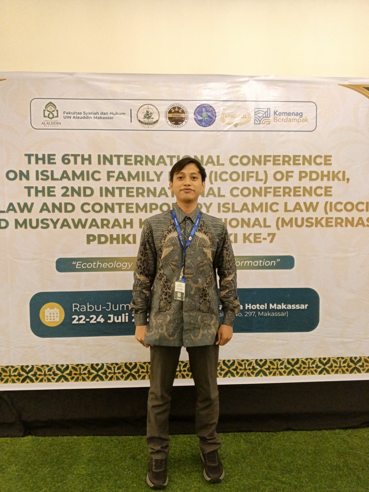
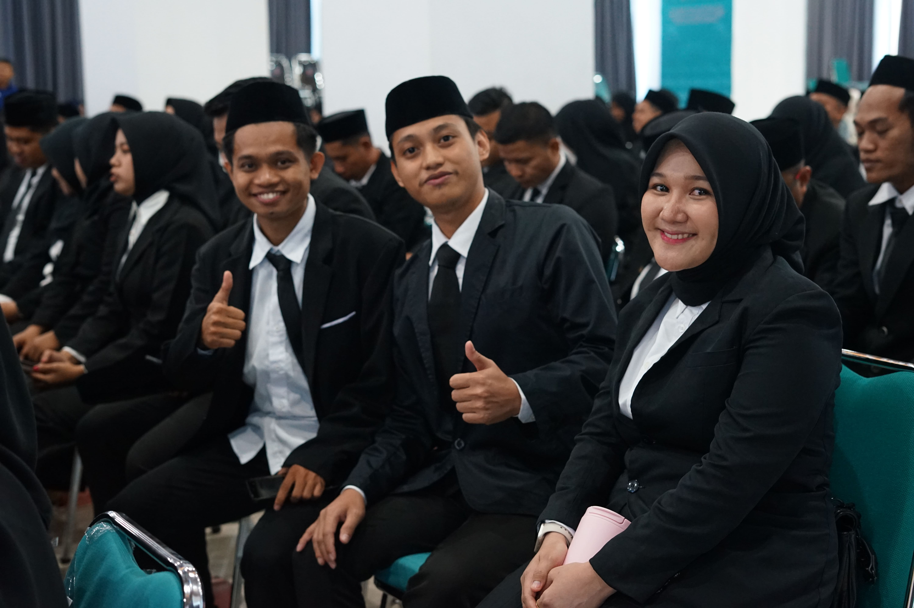
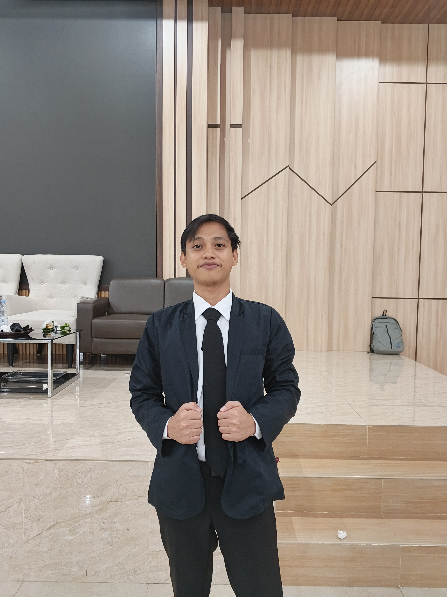
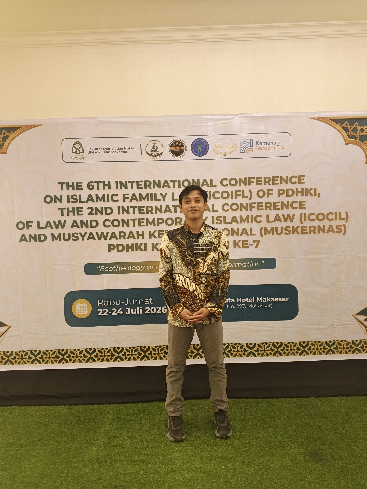

Hukum Keluarga Islam
Perkawinan, keluarga, maqāṣid al-sharīʿah, gender, dan transformasi hukum.
AHMAD, S.H., M.H.
Peneliti Hukum Keluarga Islam & Akademisi

Lulusan Magister Hukum Keluarga Islam dari Pascasarjana IAIN Parepare (2026) dan saat ini menempuh Program Doktor Studi Islam di Pascasarjana IAIN Parepare. Memiliki dedikasi tinggi pada penelitian akademik dan pengembangan keilmuan, dengan rekam jejak publikasi ilmiah yang sangat kuat — lebih dari 40 karya di jurnal bereputasi internasional (Scopus Q1) dan nasional (Sinta). Aktif dalam riset hibah (LITAPDIMAS) dan pengelolaan organisasi akademik.
Ahmad adalah seorang akademisi, peneliti, dan pengembang teknologi yang berdedikasi pada persimpangan antara riset keilmuan, tata kelola publikasi ilmiah, dan inovasi ekosistem digital.
Perkawinan, keluarga, maqāṣid al-sharīʿah, gender, dan transformasi hukum.
Menghubungkan hukum dengan budaya lokal, teknologi digital, ekonomi syariah, dan isu sosial.
Aktif dalam publikasi, riset hibah, organisasi akademik, dan jejaring penulis.
Memiliki rekam jejak yang solid dalam mengawal kualitas diseminasi ilmu pengetahuan sebagai Editor. Kapasitas ini ditunjang oleh pemahaman mendalam terhadap standar indeksasi internasional, etika publikasi, dan manajemen peer-review pada berbagai jurnal akademik, di antaranya:
Aktif dalam tim editorial jurnal JPIK, Carita, Hukamaa, AEEJ, Aliftah, Syamail, Rikaz, Al-Maiyyah, Kuriositas, Makkareso, dan Filantropi.
Berperan sebagai editor pada jurnal Pattola Syara', Tashdiruna, Entelecheia, Pappangngaja, Pappadalleq, Sagara, dan Wellspring.
Portofolio ini menyoroti perpaduan unik antara ketajaman analisis keilmuan, kepemimpinan redaksional dalam publikasi, dan keahlian teknis tingkat lanjut.
Peran: Anggota Penelitian
↗Peran: Peneliti
↗Jurnal Ilmiah Al-Syir'ah
Al-Ahkam
Al-Qanun Dikutip: 2
YUDISIA
Usroh
NUANSA
Multazam
Jurnal HKI El-Qisth
Tasdiruna
Asas Wa Tandhim
USRAH
International Journal of Sharia and Law Dikutip: 4
Jurnal Riset HKI Dikutip: 2
Qanun Dikutip: 2
Jurnal Marital Dikutip: 2
Al-IHKAM Dikutip: 2
Al Maqashidi Dikutip: 2
SAMAWA Dikutip: 2
Al-Infaq
Legitima
EL-AHLI
Jurnal Iqtisaduna
AL-MAIYYAH
AHKAM
Al-Hukamaa Dikutip: 3
Maqasid Dikutip: 1
Ahlika
Al-Hukamaa
Haramain
Al-Hukmi
Al Fuadiy Dikutip: 9
Al-Hukamaa Dikutip: 7
Al-Marshad Dikutip: 1
Makkareso
Daftar lengkap karya publikasi ilmiah berdasarkan CV sumber. Gunakan filter tahun untuk menelusuri karya per periode.
Pascasarjana IAIN Parepare
Pascasarjana IAIN Parepare
IAIN Parepare
2026–2031
IAIN Parepare · 2019
Dokumentasi visual kegiatan, publikasi, dan materi promosi — gaya feed Instagram. Klik untuk perbesar, double-click untuk suka.






Belum ada foto. Tambahkan gambar ke folder images/flyer/ dengan nama 01.jpg, 02.jpg, dan seterusnya.